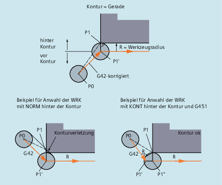

NORM und KONT im Vergleich
KONT unterscheidet sich von NORM nur bei einer Werkzeug-Startposition, die hinter der Kontur liegt:
| Achtung |
KollisionsgefahrUm eventuelle Kollisionen zu vermeiden, müssen veränderte An-/Abfahrwinkel durch die Werkzeugradiuskorrektur bei der Programmierung berücksichtigt werden. |